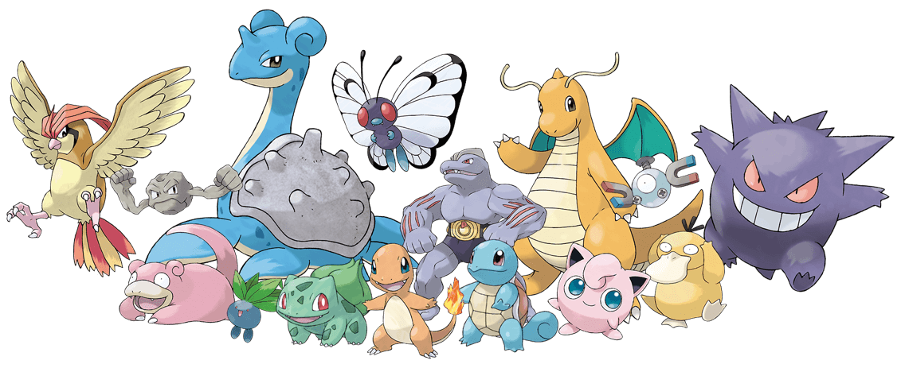

<mat-toolbar class="d-flex">
  <button
    (click)="toggleOptions()"
    mat-icon-button
    class="example-icon"
    aria-label="Example icon-button with menu icon"
  >
    <mat-icon>menu</mat-icon>
  </button>

  <span class="d-flex align-items-center">
    Dex

    

    
  </span>
  <span class="example-spacer"></span>
  <button
    (click)="redirectToHome();"
    mat-icon-button
    class="example-icon favorite-icon"
    aria-label="Example icon-button with heart icon"
  >
    <mat-icon class="ms-2">home</mat-icon>
  </button>
</mat-toolbar>
@if (optionsOpen) {
<mat-list>
  <div class="optionsList" (click)="redirectToSearch()">
    
    <p>Pesquisar</p>
  </div>
  <mat-divider></mat-divider>

  <div class="optionsList">
    
    <p>PokeDex</p>
  </div>
</mat-list>

}
